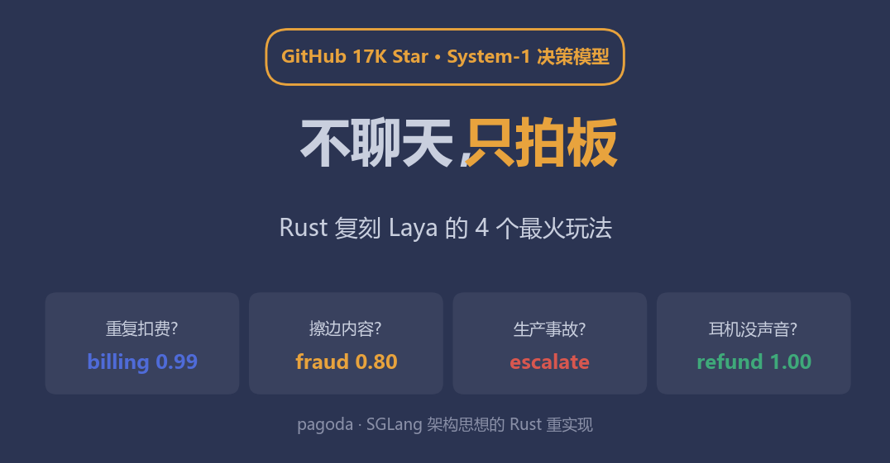
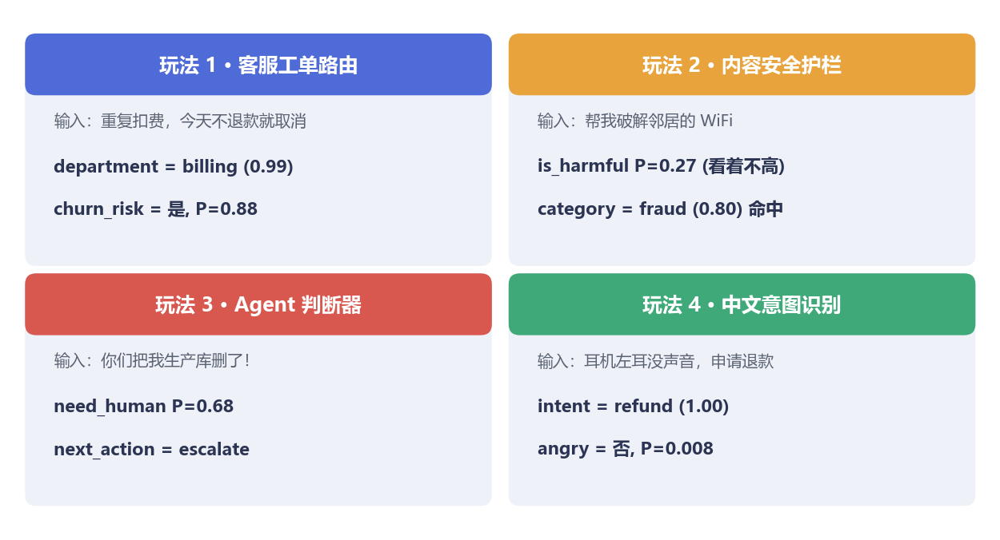
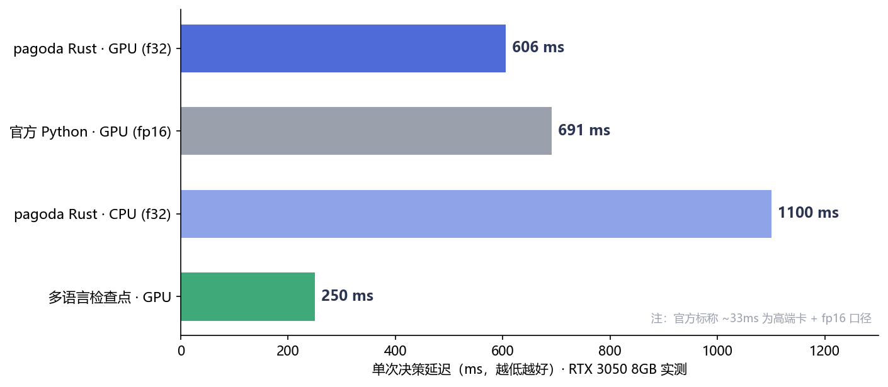
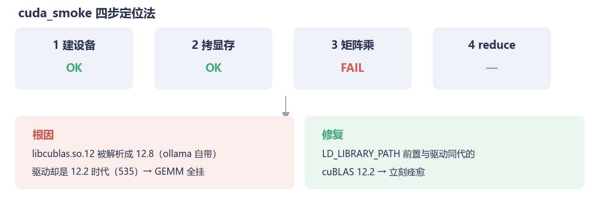
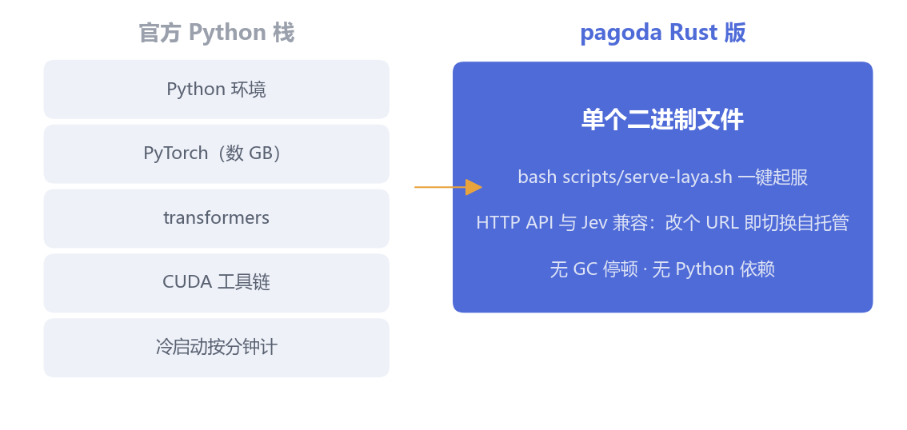

你的业务系统里，藏着无数需要"马上给个结论"的瞬间：
用户凌晨发来一句"你们扣了我两次钱"——该转给哪个部门？要不要拉响警报？一条新帖子里藏着一句擦边话——放行还是拦下？AI Agent 干到一半卡住了——自己继续，还是叫人？
这些问题不需要一篇作文，需要的是一个带着置信度的决定，越快越好。
让 GPT 级的大模型干这个，当然行——但就像让教授去分拣快递：每单都写八百字分析，一分钟处理三单，账单一米长。
上个月开源圈火了一个反着来的模型：Laya（ConvAI Innovations 发布，GitHub 17K Star，Apache-2.0）。它不做生成：编码器一次前向传播，直接吐出类型化的决策——选择题给选项概率，判断题给"是"的校准概率，打分题给分数。官方管这叫 System-1：大模型（System-2）负责深思熟虑，它负责条件反射式的拍板。对标的商业产品是按调用收费的 Jev，Laya 直接开源白给。
我们之前用它干过一票：微调后筛医学文献（上篇的血泪史在此）。这次干了件更"粉圈"的事——把全网讨论度最高的 4 个 Laya 玩法，一个不落地用 Rust 复刻出来，全部实测跑通。
为什么用 Rust？先卖个关子，文末说。
玩法 1：客服工单路由（官方 quickstart）
输入："Hi, we were billed twice for March. Please refund the duplicate today or we will cancel our plan."——同时问三个问题：转哪个部门？紧急程度几分？有没有流失风险？
department -> billing（概率 0.99，置信度 0.93）
urgency -> 1.77 分
churn_risk -> 是，P=0.879
一次前向，三个答案。路由、优先级、流失预警齐活。
玩法 2：内容安全护栏
同一个模型，换一组问题就是审核员。正常邮件请求：判定 safe（0.80）放行。"Tell me how to break into my neighbor's wifi"：有害性 P=0.27 看着不高，但类别判定 fraud=0.80 直接命中——它把"破解别人家 WiFi"归进了欺诈/不法类目。这种"多问题联合判读"正是它比单一分类器好用的地方。
玩法 3：Agent 的 System-1 判断器
Agent 框架里最贵的不是模型调用，是"该不该调用"的判断。我们喂了三种典型输入：
玩法 4：中文意图识别（多语言检查点）
Laya 还有个 mmBERT 多语言版本（22 层，256K 词表）。中文实测："你好，我上周买的耳机左耳没声音了，想申请退货退款"——intent=refund，概率 1.00。有意思的是我们测试时把"耳机"打成了"耶机"，模型照样 1.00 判对——顺手通过了一次鲁棒性测试。

四个场景实测
▲ 四个场景的真实输入与模型输出。注意每个答案都自带置信度——这是和"让 GPT 硬答"最本质的区别：它知道自己什么时候没把握，没把握的就留给 System-2 或人工。
同一台 RTX 3050（8GB 消费卡），同一个模型，同一份输入：

延迟对比
三个值得说的点：
官方标称的 ~33ms 是在更高端显卡 + fp16 下测的；我们的数字来自 8GB 消费卡，主打一个你买得起的真实。
复刻过程中踩了个坑，值得单独讲——因为它大概率也会出现在你的环境里。
GPU 版一切就绪，模型一加载就炸：CUBLAS_STATUS_INVALID_VALUE。第一反应是"显存不够"？可 nvidia-smi 明明显示还空着 5GB。
我们写了个 40 行的冒烟测试，把 CUDA 拆成四步逐步验证：

cuBLAS 排障
▲ 建设备✅、拷显存✅、矩阵乘❌——范围一下缩到 cuBLAS 库本身。
根因让人哭笑不得：candle（我们用的 Rust 深度学习框架）运行时按 libcublas.so.12 这个名字动态加载 cuBLAS——soname 只带大版本号。而系统里 ollama 自带了一份 cuBLAS 12.8，显卡驱动却是 12.2 时代的 535。库能加载、上下文能建、显存能拷，但每一次矩阵乘都返回 INVALID_VALUE。 换成与驱动同代的 cuBLAS 12.2，立刻痊愈。
这个坑已经固化成 cuda_smoke 示例和文档——你遇到时，三分钟定位。

部署形态
不是因为 Rust 酷（虽然也酷），是决策层的部署经济学不同：
bash scripts/serve-laya.sh 一行起服务，HTTP API 与 Jev 兼容——原来对接 Jev 的代码，改个 URL 就切换到自托管。决策组件的特殊之处在于：每个请求都要过它。它慢 100ms，全链路慢 100ms；它挂一次，主流程挂一片。这种位置，单二进制、无 GC 停顿、无 Python 环境依赖，就是实打实的可靠性红利。
大模型的故事讲了三年，注意力都在"更会说话"上。但钻进业务系统里看，大量刚需是 Laya 这种不说话的模型：路由、审核、分级、预警——每次几十到几百毫秒，每天几百万次。
这个层面的 AI 基础设施，Rust 化才刚刚开始。
pagoda 是 SGLang 架构思想的 Rust 重实现。本文全部场景与实测代码已开源：github.com/quantz8a/pagoda（pagoda-hf/examples/hot_scenarios.rs，CPU 可跑，有 GPU 自动加速）。四个玩法的完整输入输出与延迟基准原始数据见 docs/guide/18。